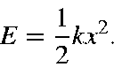
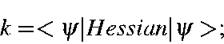
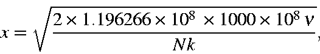

From this, the distance, x, which the system moves through, can be calculated
from

The travel can also be calculated using the DRC, by depositing one quantum of energy into a vibrational mode. For a system at a stationary point, the relevant keywords would be IRC=1 DRC t=1m. For larger systems, the time may need to be increased. At least one coordinate must have an optimization flag set to 1. This is required in order to instruct the DRC to print the turning points.